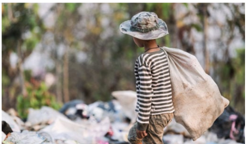

De acordo com o IBGE, o Nordeste é a região com o maior número de crianças e adolescentes em situação de trabalho infantil no Brasil:
Em 2023, 506 mil crianças e adolescentes do Nordeste estavam em situação de trabalho infantil.
A proporção de crianças e adolescentes em situação de trabalho infantil no Nordeste é de 4,5%, acima da média nacional.
A incidência do trabalho infantil aumenta com a idade.

A carga horária de trabalho é outro fator alarmante: quase 40% das crianças e adolescentes em trabalho infantil trabalham até 14 horas por semana. No entanto, 20,6% delas têm jornadas de 40 horas ou mais, o que impacta diretamente sua educação e desenvolvimento. Entre os mais jovens, de 5 a 13 anos, mais de 80% trabalham até 14 horas por semana. Já no grupo de 16 a 17 anos, 31,1% trabalham 40 horas ou mais.